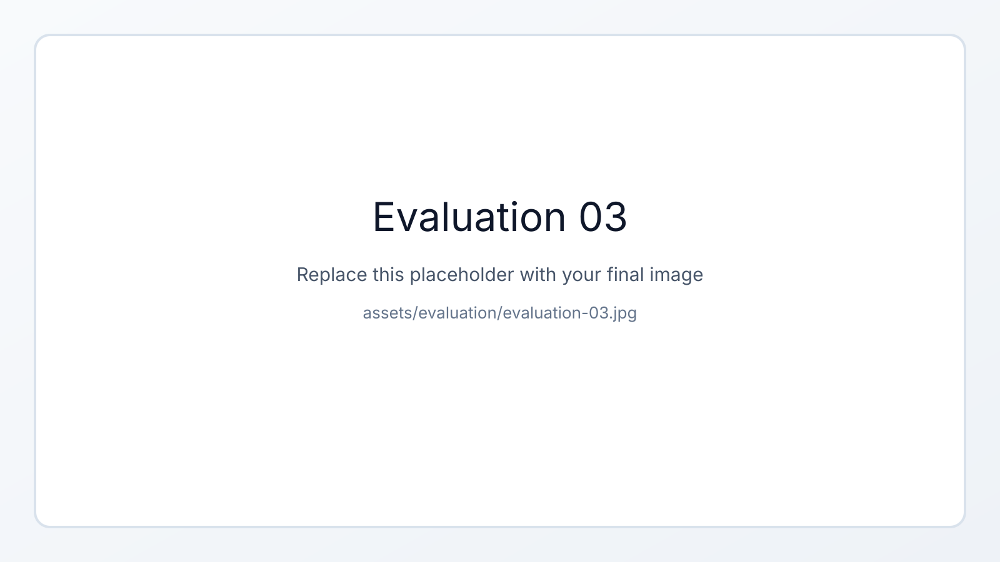

Chapter overview
Evaluation
The evaluation assesses the proposed framework at three levels: trajectory tracking of the coupled robot system, closed-loop compensation of process disturbances during printing, and geometric agreement between the planned and the as-built component. Together, these experiments quantify both the control performance and the manufacturing quality of the full print-while-drive system.
- The robot control system is first evaluated independently of active height correction in order to assess TCP velocity tracking and path-following accuracy under continuous mobile operation.
- The Layer Height Controller is then tested under a controlled disturbance, where an integrated HT pipe introduces a local height error that must be compensated online through feed-rate adaptation.
- Finally, the as-built geometry is reconstructed from the recorded line-laser profiles and compared with the target model to assess global part accuracy and systematic process deviations.
- Beyond validating the control concept, the evaluation also shows that the same laser data used for online control can be reused to generate a digital twin of the fabricated component.
